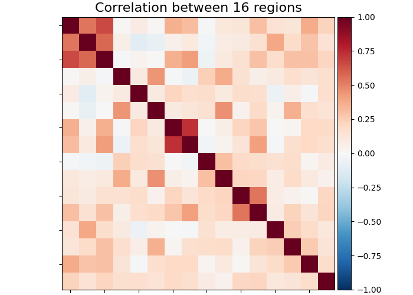
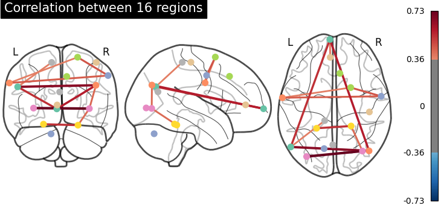

Note
Click here to download the full example code or to run this example in your browser via Binder
9.4.7. Regions extraction using Dictionary learning and functional connectomes¶
This example shows how to use nilearn.regions.RegionExtractor
to extract spatially constrained brain regions from whole brain maps decomposed
using Dictionary learning and use them to build
a functional connectome.
We used 20 movie-watching functional datasets from
nilearn.datasets.fetch_development_fmri and
nilearn.decomposition.DictLearning for set of brain atlas maps.
This example can also be inspired to apply the same steps to even regions extraction
using ICA maps. In that case, idea would be to replace
Dictionary learning to canonical ICA decomposition
using nilearn.decomposition.CanICA
Please see the related documentation of nilearn.regions.RegionExtractor
for more details.
9.4.7.1. Fetch brain development functional datasets¶
We use nilearn’s datasets downloading utilities
from nilearn import datasets
rest_dataset = datasets.fetch_development_fmri(n_subjects=20)
func_filenames = rest_dataset.func
confounds = rest_dataset.confounds
9.4.7.2. Extract functional networks with Dictionary learning¶
Import DictLearning from the
decomposition module, instantiate the object, and
fit the model to the
functional datasets
from nilearn.decomposition import DictLearning
# Initialize DictLearning object
dict_learn = DictLearning(n_components=8, smoothing_fwhm=6.,
memory="nilearn_cache", memory_level=2,
random_state=0)
# Fit to the data
dict_learn.fit(func_filenames)
# Resting state networks/maps in attribute `components_img_`
components_img = dict_learn.components_img_
# Visualization of functional networks
# Show networks using plotting utilities
from nilearn import plotting
plotting.plot_prob_atlas(components_img, view_type='filled_contours',
title='Dictionary Learning maps')
Out:
/home/circleci/miniconda3/envs/testenv/lib/python3.8/site-packages/nilearn/plotting/displays/_axes.py:71: UserWarning:
linewidths is ignored by contourf
/home/circleci/miniconda3/envs/testenv/lib/python3.8/site-packages/nilearn/plotting/displays/_axes.py:71: UserWarning:
No contour levels were found within the data range.
<nilearn.plotting.displays._slicers.OrthoSlicer object at 0x7f26d5d25ee0>
9.4.7.3. Extract regions from networks¶
Import RegionExtractor from the
regions module.
threshold=0.5 indicates that we keep nominal of amount nonzero
voxels across all maps, less the threshold means that
more intense non-voxels will be survived.
from nilearn.regions import RegionExtractor
extractor = RegionExtractor(components_img, threshold=0.5,
thresholding_strategy='ratio_n_voxels',
extractor='local_regions',
standardize=True, min_region_size=1350)
# Just call fit() to process for regions extraction
extractor.fit()
# Extracted regions are stored in regions_img_
regions_extracted_img = extractor.regions_img_
# Each region index is stored in index_
regions_index = extractor.index_
# Total number of regions extracted
n_regions_extracted = regions_extracted_img.shape[-1]
# Visualization of region extraction results
title = ('%d regions are extracted from %d components.'
'\nEach separate color of region indicates extracted region'
% (n_regions_extracted, 8))
plotting.plot_prob_atlas(regions_extracted_img, view_type='filled_contours',
title=title)
Out:
/home/circleci/miniconda3/envs/testenv/lib/python3.8/site-packages/nilearn/plotting/displays/_axes.py:71: UserWarning:
No contour levels were found within the data range.
/home/circleci/miniconda3/envs/testenv/lib/python3.8/site-packages/nilearn/plotting/displays/_axes.py:71: UserWarning:
linewidths is ignored by contourf
/home/circleci/miniconda3/envs/testenv/lib/python3.8/site-packages/numpy/ma/core.py:2826: UserWarning:
Warning: converting a masked element to nan.
<nilearn.plotting.displays._slicers.OrthoSlicer object at 0x7f26d3527af0>
9.4.7.4. Compute correlation coefficients¶
First we need to do subjects timeseries signals extraction and then estimating
correlation matrices on those signals.
To extract timeseries signals, we call
transform onto each subject
functional data stored in func_filenames.
To estimate correlation matrices we import connectome utilities from nilearn.
from nilearn.connectome import ConnectivityMeasure
correlations = []
# Initializing ConnectivityMeasure object with kind='correlation'
connectome_measure = ConnectivityMeasure(kind='correlation')
for filename, confound in zip(func_filenames, confounds):
# call transform from RegionExtractor object to extract timeseries signals
timeseries_each_subject = extractor.transform(filename, confounds=confound)
# call fit_transform from ConnectivityMeasure object
correlation = connectome_measure.fit_transform([timeseries_each_subject])
# saving each subject correlation to correlations
correlations.append(correlation)
# Mean of all correlations
import numpy as np
mean_correlations = np.mean(correlations, axis=0).reshape(n_regions_extracted,
n_regions_extracted)
9.4.7.5. Plot resulting connectomes¶
First we plot the mean of correlation matrices with
plot_matrix, and we use
plot_connectome to plot the
connectome relations.
title = 'Correlation between %d regions' % n_regions_extracted
# First plot the matrix
display = plotting.plot_matrix(mean_correlations, vmax=1, vmin=-1,
colorbar=True, title=title)
# Then find the center of the regions and plot a connectome
regions_img = regions_extracted_img
coords_connectome = plotting.find_probabilistic_atlas_cut_coords(regions_img)
plotting.plot_connectome(mean_correlations, coords_connectome,
edge_threshold='90%', title=title)
- 
- 
Out:
<nilearn.plotting.displays._projectors.OrthoProjector object at 0x7f26d9f90d60>
9.4.7.6. Plot regions extracted for only one specific network¶
First, we plot a network of index=4 without
region extraction (left plot).
from nilearn import image
img = image.index_img(components_img, 4)
coords = plotting.find_xyz_cut_coords(img)
display = plotting.plot_stat_map(img, cut_coords=coords, colorbar=False,
title='Showing one specific network')
Now, we plot (right side) same network after region extraction to show that connected regions are nicely separated. Each brain extracted region is identified as separate color.
For this, we take the indices of the all regions extracted related to original network given as 4.
regions_indices_of_map3 = np.where(np.array(regions_index) == 4)
display = plotting.plot_anat(cut_coords=coords,
title='Regions from this network')
# Add as an overlay all the regions of index 4
colors = 'rgbcmyk'
for each_index_of_map3, color in zip(regions_indices_of_map3[0], colors):
display.add_overlay(image.index_img(regions_extracted_img, each_index_of_map3),
cmap=plotting.cm.alpha_cmap(color))
plotting.show()
Out:
/home/circleci/miniconda3/envs/testenv/lib/python3.8/site-packages/numpy/ma/core.py:2826: UserWarning:
Warning: converting a masked element to nan.
Total running time of the script: ( 2 minutes 12.243 seconds)
Estimated memory usage: 1063 MB